VR Artifact — Tina
Kolin’s Experience
This VR experience presents Kolin’s perspective for users who choose to protect the country after experiencing the letter of deployment artifact. It places users directly into his journey, allowing them to experience the events that follow his decision to enlist in the army.
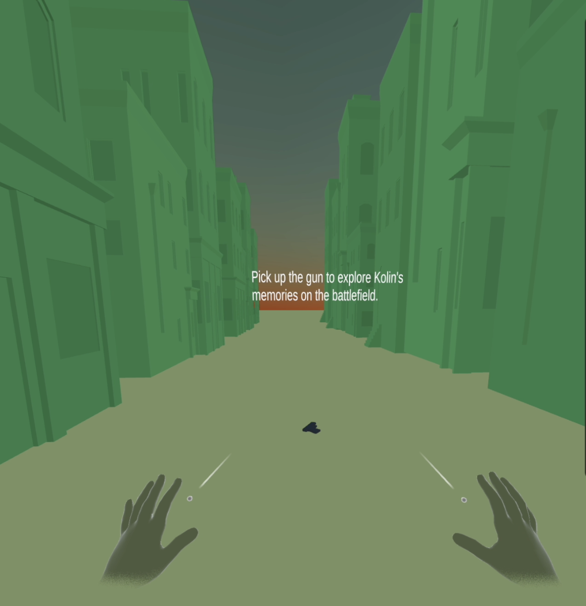
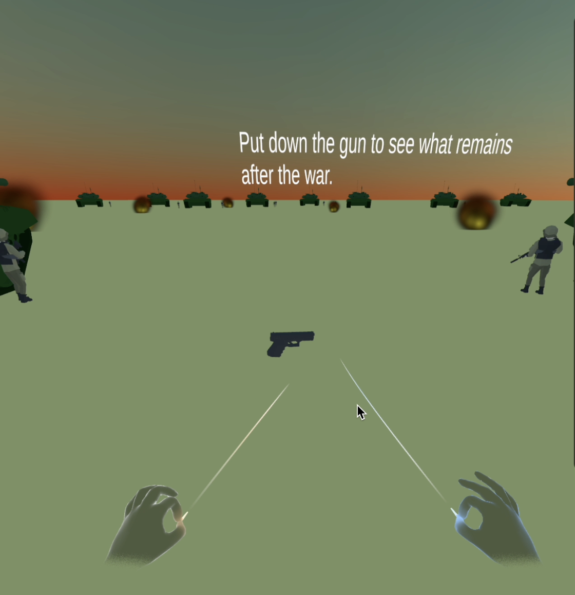
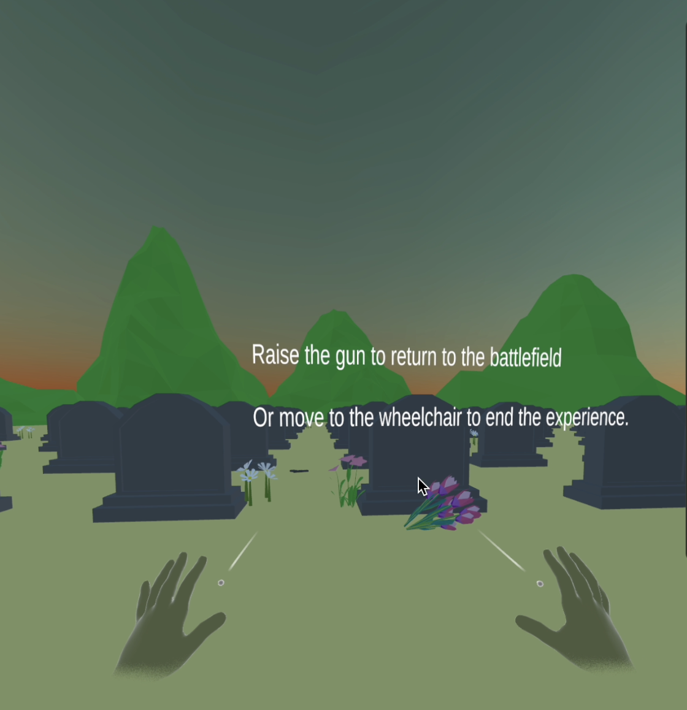
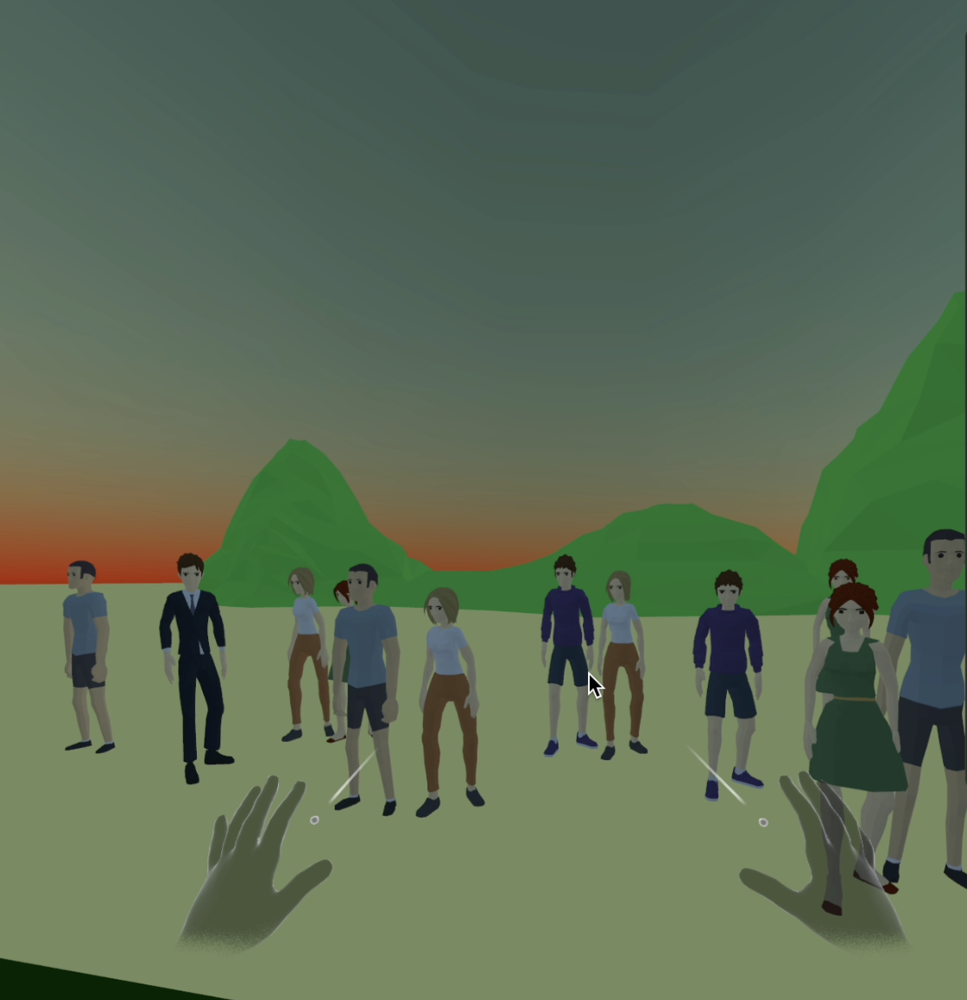
01
Overview
This VR experience presents Kolin’s perspective for users who choose to protect the country after experiencing the letter of deployment artifact. It places users directly into his journey, allowing them to experience the events that follow his decision to enlist in the army.
The experience unfolds across multiple scenes, following Kolin from protest to war and eventually to its consequences. Through immersion and interaction, it aims to help users understand not only what Kolin went through, but the impact of his decision over time.
02
Intent
The goal of this experience was to use immersion to reduce the distance between the user and the narrative.
Unlike the AR artifacts, where users can control their perspective and disengage, the VR experience places users directly inside Kolin’s world. The interaction removes the ability to step back, requiring users to move through his experiences and confront the outcomes of his choices. Rather than observing the story, users inhabit it.
03
Process
A large part of the process involved learning new tools. Both Unity and Blender were new, so early work focused on understanding how to:
- Build scenes
- Manage assets
- Create interactions
Simple test scenes were first created in Unity to experiment with placing objects and building environments before moving into the full experience.
As the narrative developed, the experience was structured into four main scenes:
- A city scene representing protest
- A battlefield representing war
- A graveyard representing loss
- A final scene showing Kolin receiving his award and discharge
Each scene represents a stage in Kolin’s journey, allowing users to move through his story rather than view it all at once.
To support this, key assets such as a gun and a badge were created in Blender and imported into Unity. These elements were chosen for both their visual presence and their narrative meaning.
Interaction was integrated directly into the environment using scripts and colliders. Users were able to pick up objects and move closer to key elements in the scene with the two key interactive objects were:
- The gun = Kolin’s decision to join the war
- The wheelchair = the consequences of that decision after he loses his leg
These interactions were designed to communicate meaning through action rather than explanation.

Building and Editing Gun Model

Building and Editing Badge Model

Editing Wheelchair Model
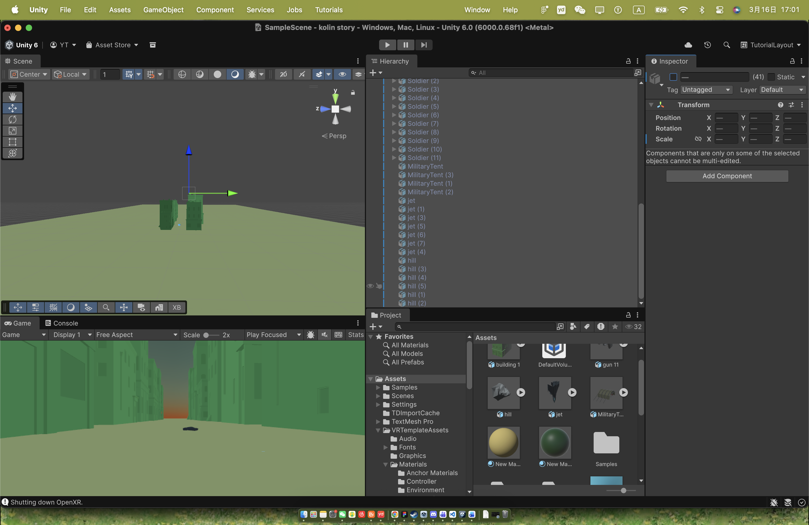
City Scene development
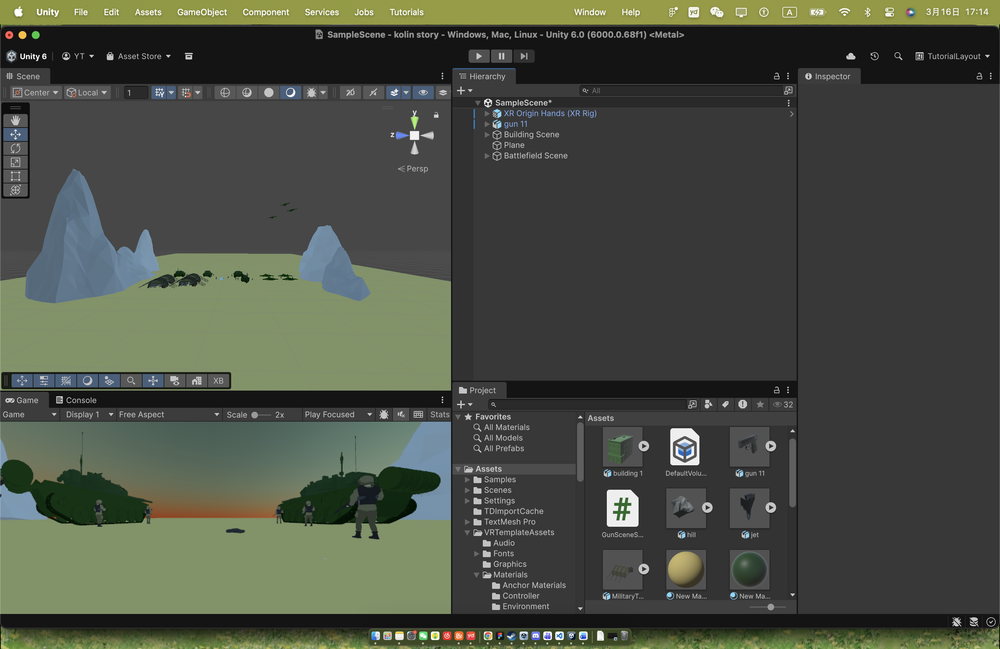
Battlefield Scene development
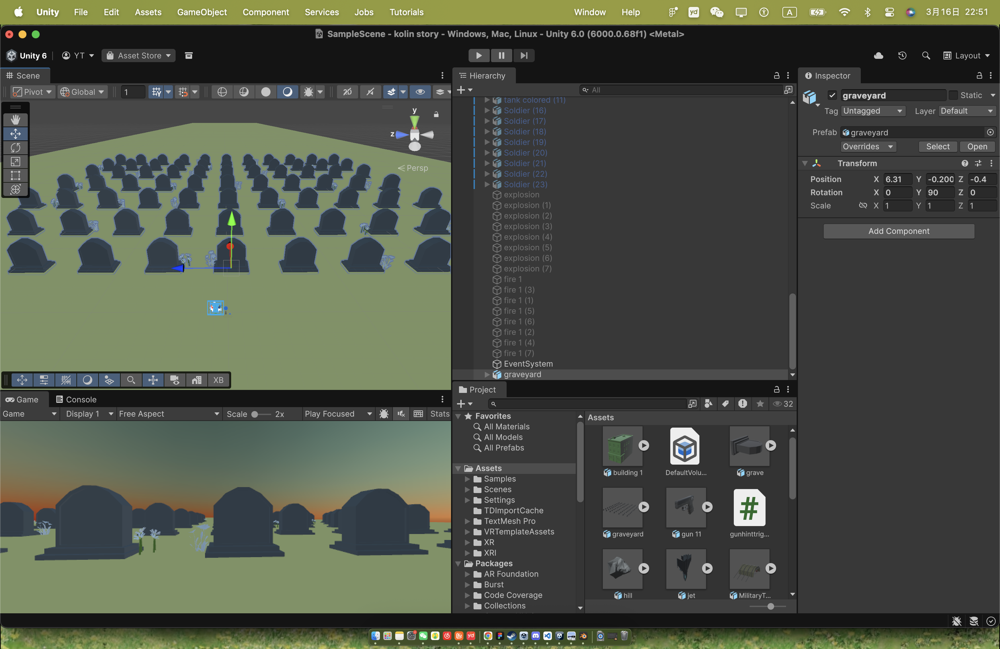
Graveyard Scene development
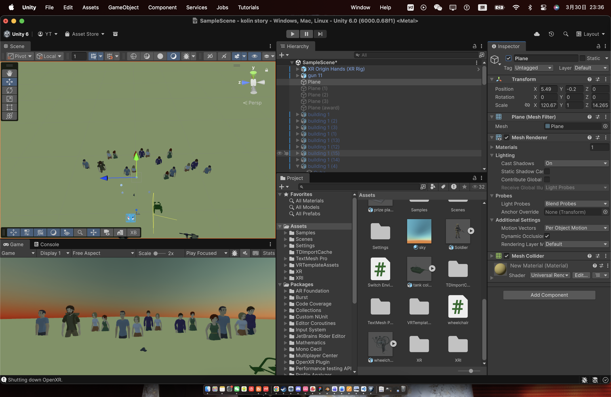
Ending Scene development
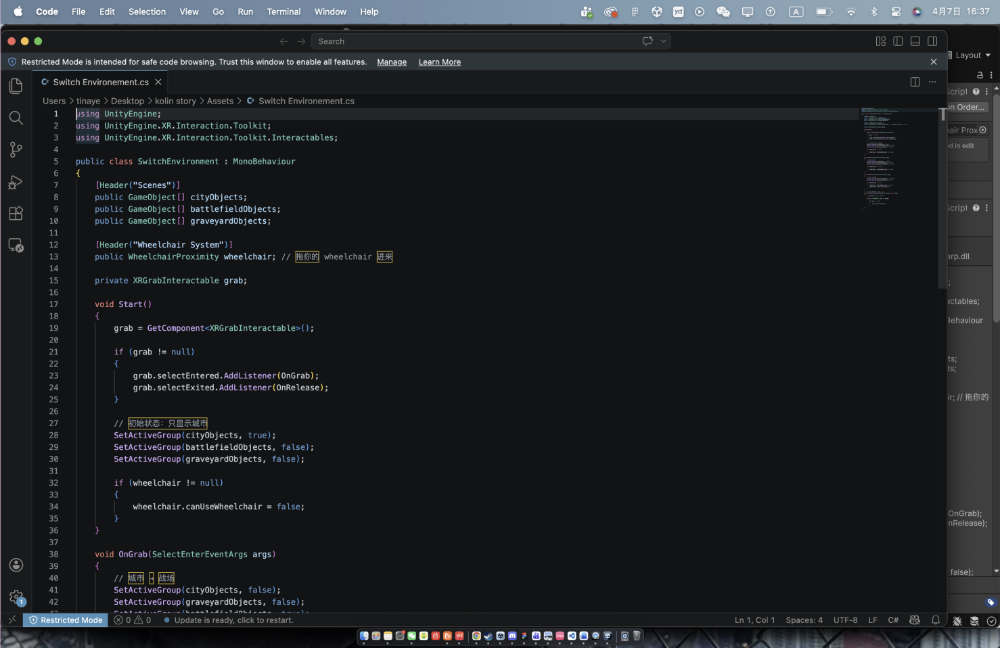
VR script developement
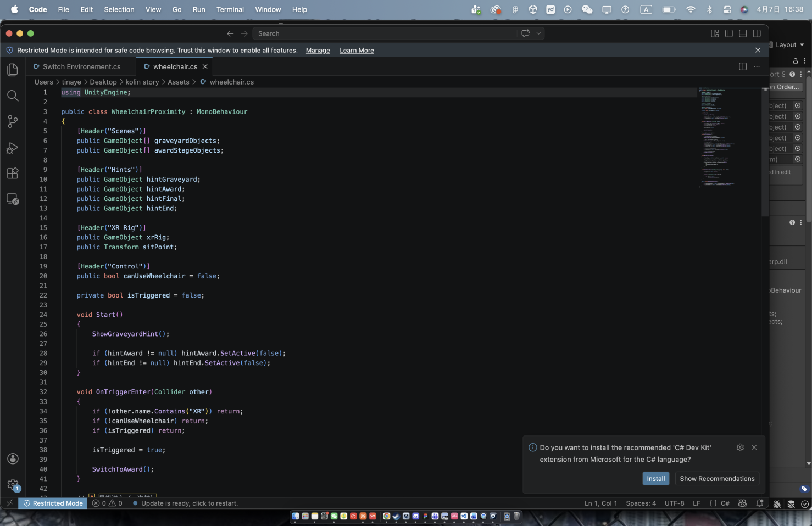
VR script development
04
Challenges
One of the main challenges was usability. During testing, many users were unsure of what they were supposed to do and which objects they could interact with. This made the experience feel unclear and reduced immersion.
To address this, visual hints were added into the environment to guide users toward possible interactions. These hints helped users understand what actions they could take without needing external instructions.
After this change, users were able to explore the experience more independently and engage more naturally with the environment.
Another challenge was the learning curve of the tools. Since both Unity and Blender were new, a significant amount of time was spent troubleshooting, experimenting, and learning workflows.
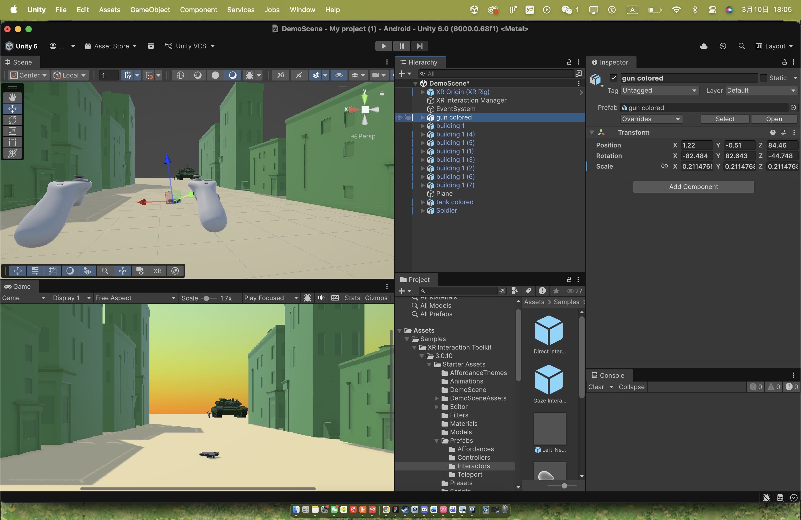
Usability testing and visual hints
05
Use of AI
AI tools were used throughout the process as a support system. They were used to:
- Find tutorials for Unity
- Assist with scripting interactions
- Troubleshoot technical issues
- Guide setup for running the project on a VR headset
AI helped speed up the learning process and provided guidance when working with unfamiliar systems.
06
Reflection
This artifact demonstrates how immersion can be used to communicate emotional and narrative impact.
While the AR experiences allow users to control their distance from the story, the VR experience removes that control and places users directly within it. This contrast strengthens the overall project by showing two different ways of engaging with conflict.
It also highlighted the importance of clarity in interaction design. Even in immersive environments, users still need guidance to understand what they can do.